Python and Fortran implementations of Fleck and Cummings's implicit Monte Carlo (IMC) scheme, published in Journal of Computational Physics (JCP) in 1971.


For each implementation, the results from the published paper (Fleck and Cummings 1971) are reproduced via a set of predefined runs included in the repository.
Dependencies
Python implementation
- Python 3
- Numpy
Fortran implementation
- GFortran
Bundled calculations
- Matplotlib
- Jupyter
Documentation
- Doxygen
- Graphviz
- Doxypypy
- LaTeX
- ghp-import
The local py_filter script must be on the $PATH.
Installation
To create a Conda env with the necessary dependencies:
conda env create -f environment.yml conda activate fcimc
Add py_filter to the $PATH:
export PATH=".:${PATH}"
Usage
Execution
To build and run everything from scratch, run the top-level script:
./runall clobber # Removes latest graphs ./runall
To see the aggregated output:
jupyter notebook verification.ipynb
To open the documentation:
open docs/html/index.html
Cleaning
To clean up intermediate build files etc.:
./runall clean
and to clean out everything (output files, executables, etc.) for a clean start:
./runall clobber
Fine control
Each part of the project has its own Makefile which can be invoked directly:
./fortran/src/Makefile ./fortran/calcs/Makefile ./python/calcs/Makefile ./docs/Makefile
to either clean up one part, e.g.:
make -C fortran/src clean make -C docs clobber
or build/execute, e.g.:
make -C python/calcs -j 4 all
Building the documentation is a special case:
PATH="$PWD/docs:$PATH" make -C docs html
which makes the py_filter command available.
GitHub Pages
The html docs produced by Doxygen can be uploaded to GitHub Pages with:
make -C docs github
(This step is not run by runall.) This uses ghp-import to commit the built documentation to a branch called gh-pages, and push this to GitHub. If the GitHub repository is configured correctly then the gh-pages branch will be rendered as a static site at https://<user>.github.io/fcimc.
Verification
Run the Jupyer notebook to plot the results:
jupyter notebook verification.ipynb
Verification against the original Fleck and Cummings (1971) results (shown on the left) of both a Fortran (middle) and a Python (right) implementation of the IMC scheme described therein.
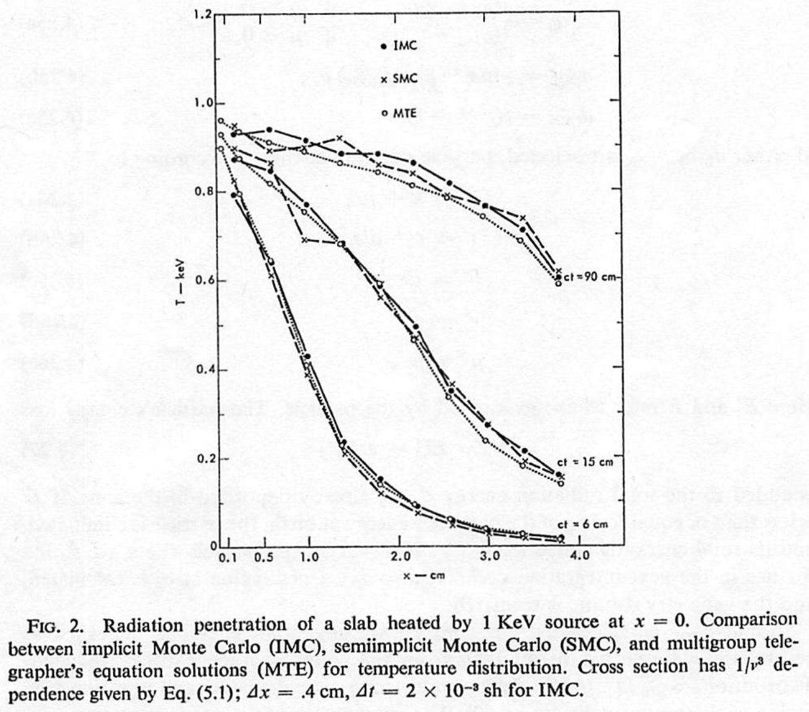 | 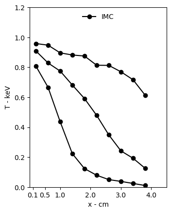 | 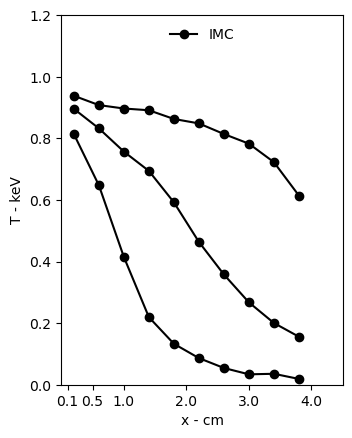 |
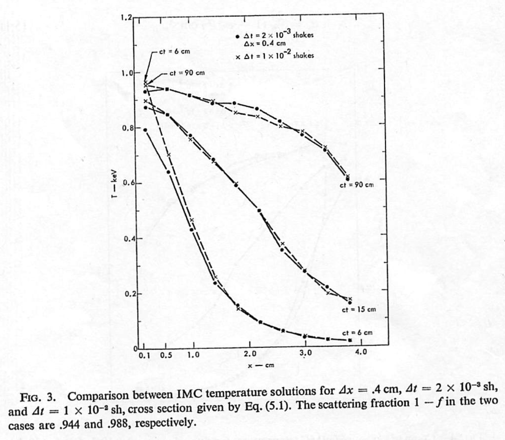 | 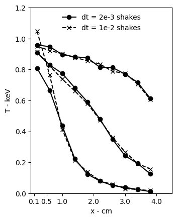 | 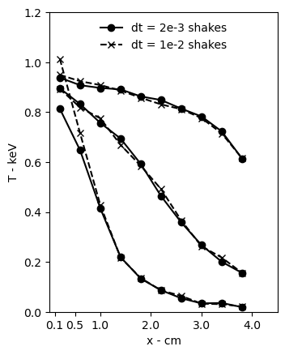 |
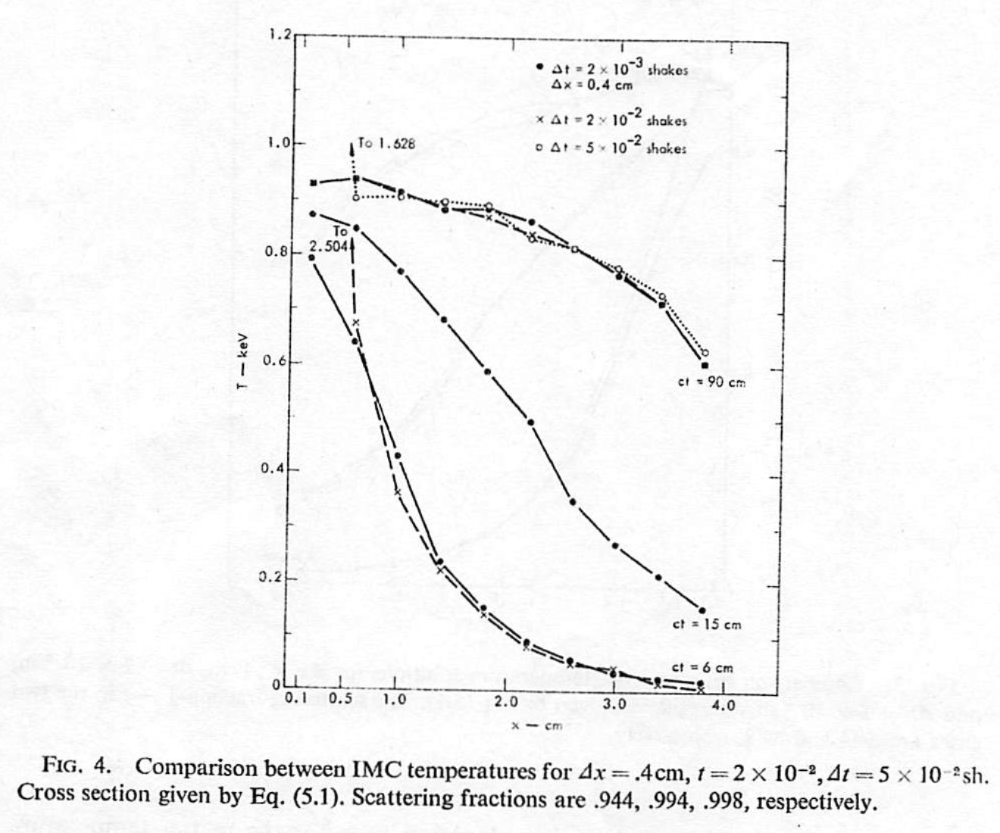 | 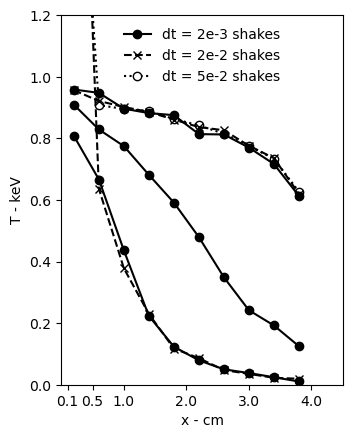 | 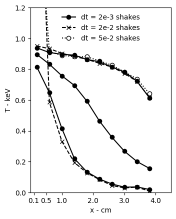 |
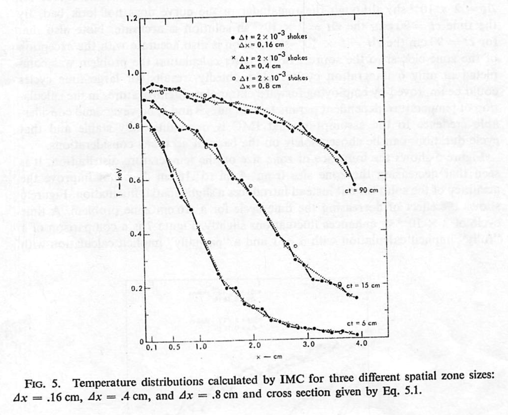 | 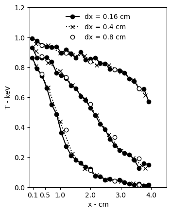 | 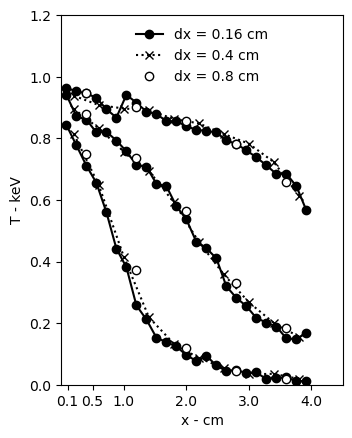 |
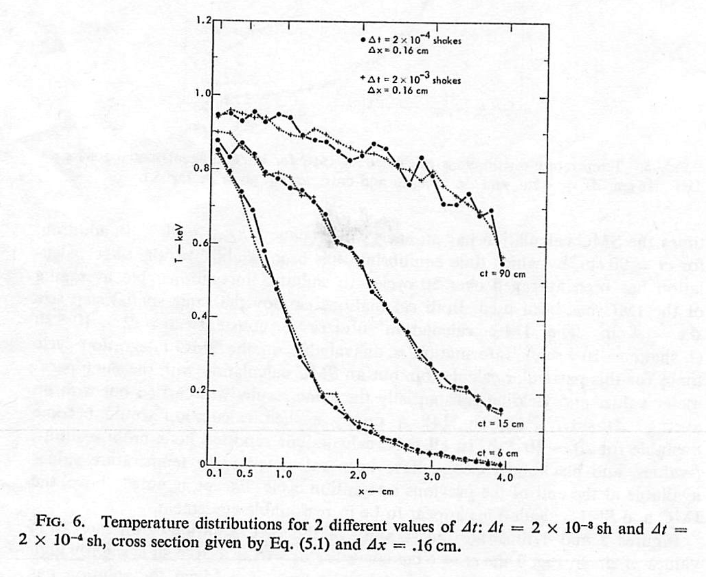 | 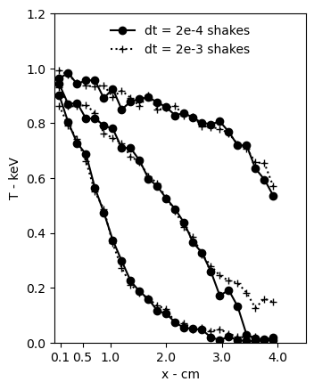 | 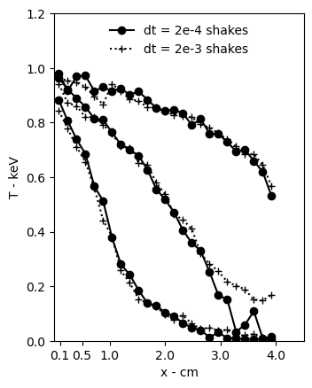 |